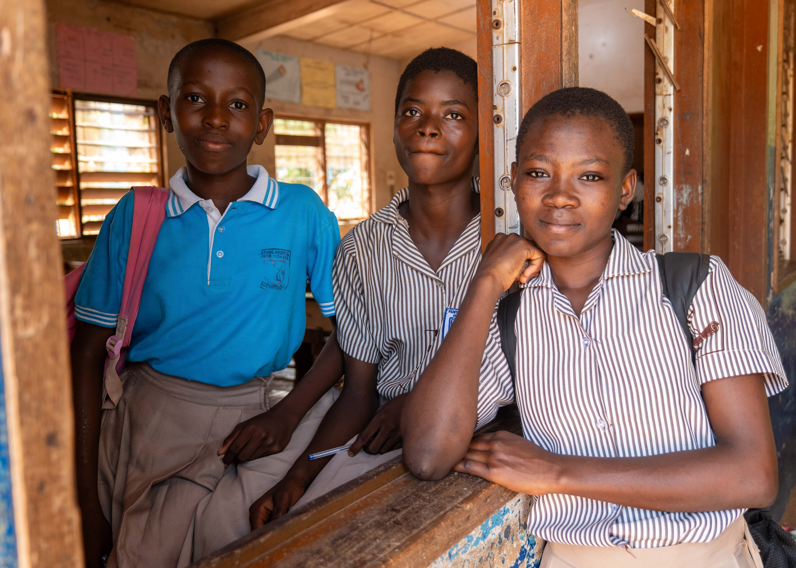

Digital Skills
Learn essential computer, internet and digital skills for education and future career opportunities.
Ubuntu Youth Foundation is a South African non-profit organisation focused on creating opportunities for young people through education, digital skills, mentorship and community development.
Explore Our Programmes Get Involved
We believe that every young person should have access to the knowledge, skills and support needed to build a positive future.
Ubuntu Youth Foundation works with young people from disadvantaged communities by providing educational assistance, digital skills training, career guidance and mentorship.
Learn More About UsOur programmes are designed to help young people develop practical skills and confidence for education, employment and personal development.
Learn essential computer, internet and digital skills for education and future career opportunities.
Receive support with studying, homework, exam preparation and developing effective learning skills.
Access career guidance, mentorship and support with preparing for further education and employment.
Many young people face barriers to accessing educational resources, digital skills and career guidance. Community support can help create opportunities that allow young people to develop their potential.
You can support Ubuntu Youth Foundation by volunteering your time, sponsoring a programme or becoming a community partner.
Get Involved Today